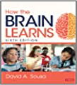
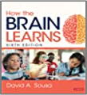

POW! An explosion takes off in the 1960’s felt all around the world –TECHNOLOGY! This modern
development allowed scientists to start to use living bodies when analyzing the brain’s
activity Below is a partial list of imaging and mapping tools that have been developed and
designed to assist with the understanding of how the brain functions, learns and its
structure..
1970’s First MEG (Magnetoencephalography) a noninvasive imaging technique
that records and evaluates active magnetic functioning in the brain using detectors
placed on one’s head
1971 First commercial CT Scan—(computed tomography) uses X-rays measurements
to produce images of the brain to locate injuries and diseases
1977 First whole-body PET (Positron Emission Tomography) imaging scanner that uses
radioactive tracer-liquid to determine how the brain functions.
1977 First MRI (Magnetic Resonance Imaging) uses magnetism, radio waves and a
computer to view the head, may discover tumors or fluid and causes of other
illnesses
1990”s First fMRI (functional Magnetic Resonance Imaging) looks at the oxygen activity in
the brain. It is a noninvasive way to gain information about the thinking brain-neurons
First fMRS (functional magnetic resonance spectroscopy) provides chemical
information on the activity of the brain as the subject is thinking. It is a noninvasive
way to study the brain through imaging.
The EEG test (which was invented in 1924) assists with gathering data on the electrical
activity of brain using electrodes. Currently a brain cap with sensors can be placed on the
scalp These tests are helpful in
diagnosing seizures and other brain problems.
The brain explorers branched out into other frontiers, developing a field of sub-studies
under neuroscience, here are a few: behavioral neuroscience, clinical neuroscience,
cognitive neuroscience, developmental neuroscience, and educational neuroscience
In the twenty-first century neuroscience research studies and discoveries are appearing at a
rapid pace throughout the world. The new BCI (brain-computer interface) developments are
amazing!
These are just a few examples:
+neurograins are tiny computer microchips, the size of a salt grains. They are wireless
pieces placed on a
human head used to track and monitor brain activity.
+robotic – bionic body parts provide functionality to a person who has a non-working body
part
 
